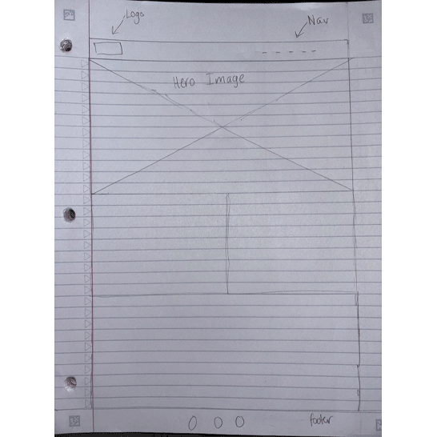

I think it is still hard for me to think about how someone would move through my pages because I have not fully organized anything or tried to use css however I will say I think I would probably want to make all my pages equally important because they all have information about who I am or what I like as well as who inspires me so I would assume that should be important to people as well as maybe have a way for people who want to get to know me to follow my social media or having some sort of contact info. I think what I would also want for my pages is for the style to be consistent from page to page like maybe the color and the way everything is structured through the hierarchy because I want people to be able to find everything they need on everypage without making it too confusing to navigate. as well as I really want to just make my website accessibility friendly I do not have an idea yet but I want it to be welcoming to everyone because that is really important to me when I create something it should have everyone in mind not just a specific group of people.

I think that my thinking when it comes to what my Point of Entry has changed drastically because the more I keep creating pages the more it is making me think about if I should have a hidden menu that you can pop out instead of having the nave just being all the sections because it really makes it feel overwhelming at least when I look at it and if I get to a website that just throws all the pages at the top of the screen having too many may turn the viewer away from even exploring your website. overall I still think that im still trying to figure out my point of entry so I do not have any clear Idea other than my wireframe I also do not think that I will be using that color that is on all my pages I need to find a better color pallete because it does not make sense having that brown yellow and red color pallete maybe once I find a color pallete I like I can work off that as well as I am going to try and see if Include just the home page, about page, inspo page and then the rest I have them as clickable containers that take you to the other pages in my website.
I would say that the one thing that I thought was really useful when working on the box model assignment was the way that when you add the background colors and the borders as well as the padding and the margin space you really could see how everything works and how it could be useful when looking at how to organize your website to make it cohesive. before this I really felt like It would be daunting to have to work with the way something takes up space on the website but I think the more I practice it I will be able to understand it better and how everything gets affected when changing the different pixel sizes as well as when adding the different borders and backgrounds you start to see how it all comes together.
I do not think I did my best yet I still feel like this is not polished I still need to continue to practice hierarchy because looking at this I really do not see my about page using any of the aspects. although it is my first time doing this again I can't be hard on myself however if I would have attempted this with more time I think I can really map out everything to where I want it to be especially because I took a lot more time doubting myself which I think really stopped me from making this the best that it can be. I think the only thing that I would change is probably the layout of everything it all feels off from the way I put the video to the type it really does not have that structured feel.
I did have a prior knowledge of the idea of hierarchy because I did take a web design class before however it connects to pretty much anything that I have done with design before I think that although I have hard of hierarchy it was a really interesting thing to see that we actually did the opposite of hierarcy we went against the typical aspects of it and created something that does not follow the rules. also there was no right way to do this so it was really fun to have creative freedom because usually in web design it feels a bit like you have to follow the rules or else sometimes you could mess up everything which is not a bad thing because that is how you learn. as for what did I learn I really just got to try visual studio code for the first time which is something new that I learned how to properly open my files in the program as well as some new code that I did not know about before I never knew you could add the br to create space and the hr to create a line to seperate things that was really an eye openner as well as it was just awesome to refresh my memory with doing all these practices again it was awesome.
I think I would first start off by saying that I really enjoyed working on this assignment even if it was a little bit difficult because the whole idea of flex boxes is still new to me so I would say that it was hard in the sense that I think one mistake I did was not change the colors to see the actual affect of the padding and width because without doing that I was not seeing anything happen I was just inputing what I thought was close to what I see on the image however what I did see is the relationship with the way we name flex items which helps us later when going into the css to properly distinguish what we want to make get affected and what we ant to be affected in another. I also noticed how display flex can be useful when organizing a website because it can determine how something might look within a container it also gives you freedom to organize your content in whatever form you want so that everything is cohesive.
when working on the mid century blog assignment I found myself a little lost on how to really fully link everything together only because on this assignment there was not really a clear set of instructions we had to figure everything out ourselves which did help me in this process kind of get the hang of everything that I need to figure out like the sizes of fonts how they should be styled and formatted so that they can follow that idea of hierarchy. this assignment also helped me look back at some of my old web design assignments that I have from my experience with coding in community college which those assignments helped me kind of break apart what I need in order for this blog page to really come together I really dont think that I did my best because I got stuck on certain aspects like the footer portion and as well at the images portion because I did not get the alignment right I still need to practice a little more and get used to the whole idea of css and the way we customize things. I would say that I am at least happy that I tried my best to understand eveyrthing on my own I know that this will take practice because there are somethings that I still need to get used to like for example the alt text and how to use that properly I feel like I do not really understand that yet however even though there were small roadblocks I was able to try my best to look back from things I have already done and take ideas from my old designs and implement them here to see what works and doesn't work.
I would say that I am not satisfied with how my page is right now I think I can really change somethings to make it a lot better like I said before it is my first time doing this so I have to be patient but I feel like I can do better maybe in the next assignment I can try a bit harder just because I think I also started this late I should probably give myself time to really take a couple of days to work on this rather than one or two because I saw that my best work comes out more when I take the time to really digest and process what I am creating and how I am creating it. I would really want to play around with css next time because I also think thats where I can really customize what I want my pages to look like. I just hope that as I progress in this class I continue to retain what I am learning because sometimes I get discouraged and forget however I think It will get easier once I get familiar with everything.